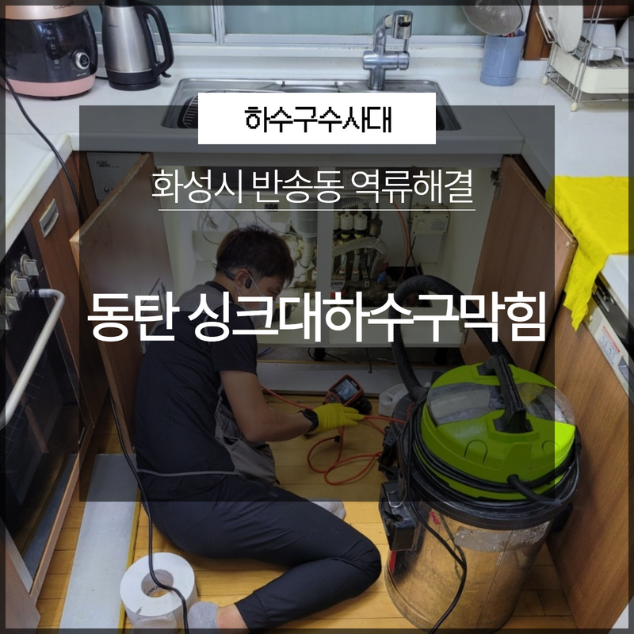
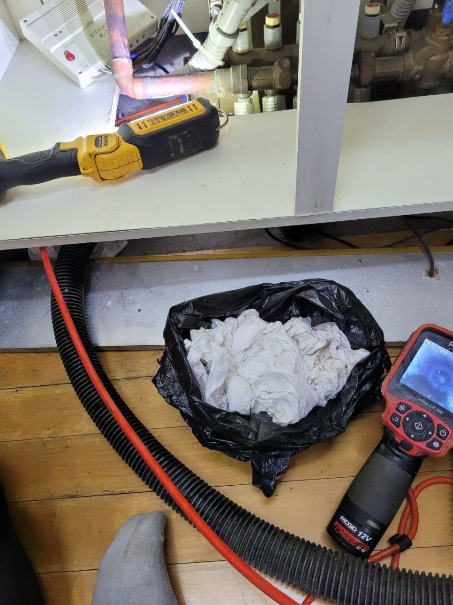
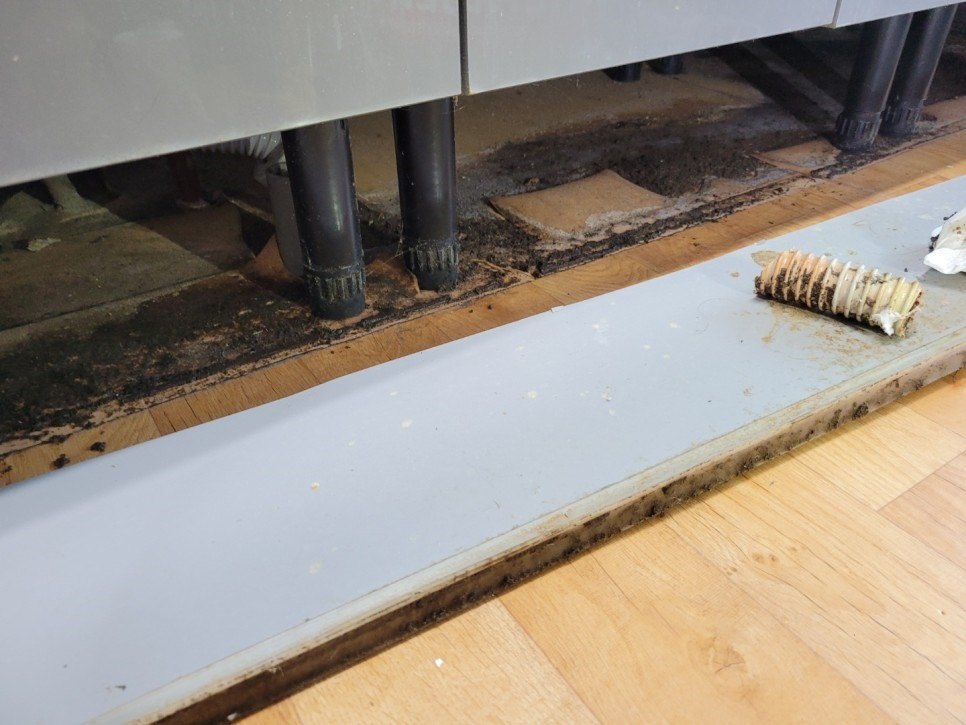
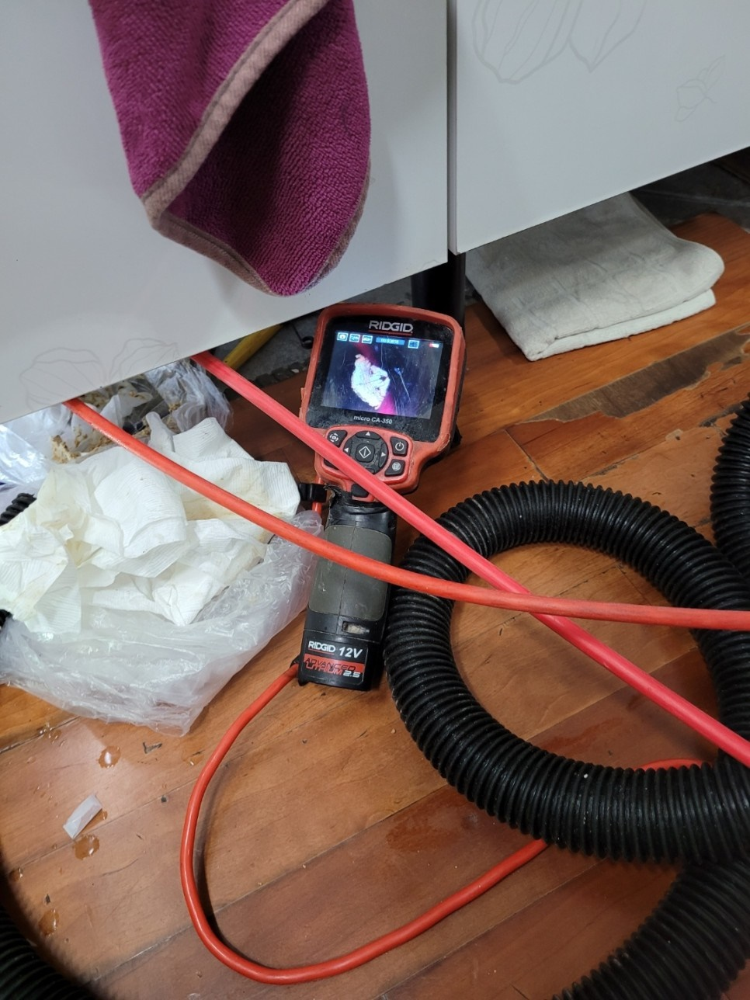
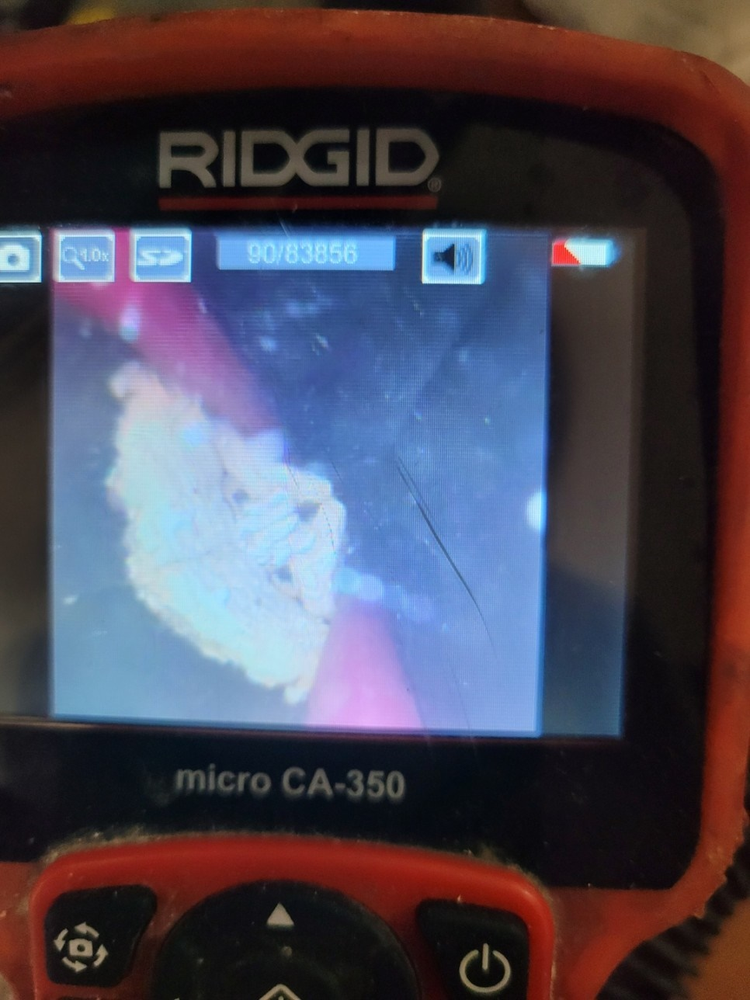
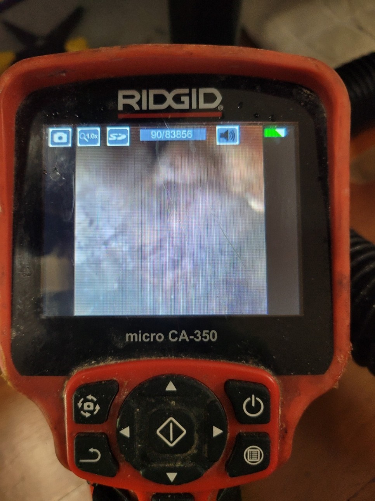
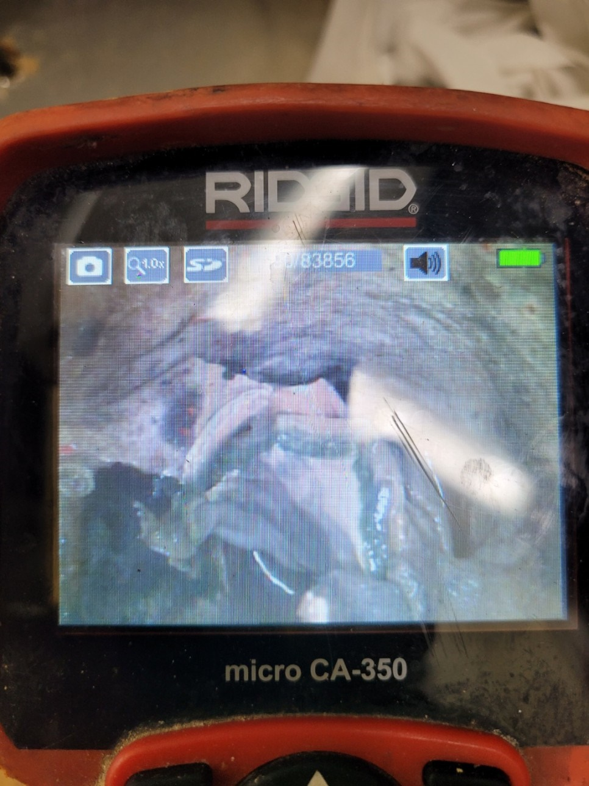

🏠 화성시 동탄 반송동 싱크대하수구막힘 역류해결 빠르게
화성 반송동 싱크대막힘 전문 시공 후기

📋 작업 개요
- 위치: 화성 반송동, 반송동, 화성
- 서비스 유형: 싱크대막힘, 하수구막힘, 배관막힘, 역류해결, 고압세척
- 작업 일시: 2023. 3. 1. 11:17
- 업체명: 하수구수사대 (010-5615-2118)
🔍 문제 상황
안녕하세요. 하수구수사대입니다.
우리는 평소에 많은 생활하수를 버리면서 생활하고 있습니다. 우리가 사용하는 생활수들의 경우는 모두 배관을 통해서 배출을 하게 되는데요 하지만 우리는 배수구가 평소에 눈에 보이지 않다 보니 자주 관심을 가지지 않게 되는 경우가 많이 있습니다.
하지만 지금 같은 겨울철에는 동파의 위험도 있기 때문에 좀 더 신경을 쓰고 생활을 해야 하는데요 막힘없이 원활한 물의 배수를 하기 위해서는 정기적으로 배관 관리를 하고 신경을 써주는 것이 필요하다고 할 수 있습니다.
요즘은 여러 세대가 모여서 생활하는 경우가 많다 보니 일반 가정집의 경우에도 배관이 막히는 일이 자주 발생을 하고 있습니다. 일반 가정집의 경우에는 정기적인 배수구 세척만 헤더라도 어느 정도 배관이 막히는 상황을 예방할 수 있습니다. 알게 모르게 유입이 되는 이물질들로 인해서 갑작스러운 막힘으로 불편한 상황을 겪으시는 분들이 많은데요.

🔎 원인 분석
💡 전문가 진단: 이번에 방문을 한 현장은
이번에 방문을 한 현장은
화성시 동탄 반송동 싱크대하수구막힘 역류해결을 통해서 해결을 한 곳으로 갑자기 싱크대가 막히게 되면서 급하게 연락을 주신 곳이었습니다. 주방의 싱크대가 막히게 되면 여러 가지로 불편한 상황이 생길 수밖에 없는데요.
역류에 악취까지 함께 발생하고 있는 상황으로 빠른 해결이 필요했습니다. 현장의 후기를 통해서 어떻게 해결을 하게 되는지 알려드리도록 하겠습니다. 화성시 동탄 반송동 싱크대하수구막힘 역류해결 현장은 싱크대의 안쪽이 막히게 되면서 완전히 막혀서 내려가지 못하고 있는 상황이었는데요.
우선 막힘이 발생한 곳의 원인이 무엇인지를 파악하는 작업을 하였습니다. 먼저 역류로 인해 넘쳐나는 이물질들을 일부 제거를 한 후에 배관 입구로 배관 내시경 작업을 하였습니다.
배관 내시경 작업은

🔧 작업 과정
내부의 상황을 카메라로 볼 수 있는 있기 때문에 배관 작업을 하기 전에 필수로 확인해야 하는 작업이라고 할 수 있습니다. 내시경 카메라를 이용해서 배관 내부의 상황을 살펴보니 입구에서부터 화면이 잘 보이지 않을 정도로 많은 종류의 음식물 찌꺼기와 이물질들이 쌓여있는 것이 보였습니다.
우리가 평소에 조심을 한다고 하지만 조금씩 유입이 되는 음식물 찌꺼기들이 시간이 지나면 서 점점 쌓이게 되면 이렇게 막힘이 발생하게 되는 것입니다. 그리고 기름때 같은 경우에는 기름과 음식물들이 섞이게 되면서 기름 덩어리가 만들어지면서 배관을 막아버리게 될 수 있는 것입니다.
화성시 동탄 반송동 싱크대하수구막힘 역류해결 배관 내부의 막힘 원인을 파악한 후에
본격적인 이물질 제거 작업을 시작하였습니다. 전문 업체의 경우는 막힘의 원인을 파악하고 그에 맞는 장비로 막힘 해결을 하기 때문에 보다 빠르고 정확한 해결을 할 수 있습니다.
평소에 뜨거운 물을 자주 부어주게 되면 어느 정도 기름 덩어리가 형성되는 것을 예방할 수 있습니다. 배관 벽으로는 기름 덩어리들이 많이 붙어 있었는데요 시간이 지나면서 딱딱하게 변해서 장비를 이용해서 확실하게 제거하는 것이 필요했습니다.
그러므로 전문 장비를 이용해서 기름 덩어리를 제거를 하는 것이 필요하다고 할 수 있습니다. 전문 장비를 사용할 때는 배관 벽의 손상이 일어나지 않도록 배관 벽의 두께나 길이를 고려해서 그에 맞는 강도로 작업을 하는 것이 필요합니다.
외부에 있는 하수구는 상대적으로 내구성이 좋기 때문에 강한 고압세척을 하더라도 문제가 없지만 이번 현장처럼 일반 가정집의 경우는 샤프트 정도의 장비로 진행을 하는 것이 안전하다고 할 수 있습니다.
배관 손상 없이 깔끔하게 내부 작업을


✅ 작업 완료
해결하고 이물질들을 제거하였습니다.
경기도 화성시 동탄대로 677-10 7층 715-A10호




⚠️ 주방 싱크대 배관 막힘 예방 수칙
- ✅ 기름기가 묻은 식기나 프라이팬은 설거지 전 키친타올로 반드시 기름때를 닦아내세요.
- ✅ 주기적으로 싱크대 개수대에 뜨거운 물을 가득 받아 한 번에 내려 배관 내부 기름을 씻어내세요.
- ✅ 배수구 거름망을 미세한 필터로 사용하시고 음식물 찌꺼기가 틈으로 새어 들지 않게 관리하세요.
- ✅ 베이킹소다와 식초를 뜨거운 물과 함께 일주일에 한 번씩 부어주면 배관 살균과 막힘 예방에 좋습니다.
💡 핵심 정리
- 확실한 장비 작업(내시경 점검 및 샤프트 스케일링)으로 원인을 뿌리 뽑습니다.
- 작업 후 1년 이내에 동일한 부위 재발 시 100% 무상 A/S 서비스를 보장합니다.
- 서울 · 경기 · 인천 전 지역에 24시간 언제든 긴급 출동할 수 있도록 항시 대기 중입니다.
❓ 자주 묻는 질문 (FAQ)
🚨 화성 반송동 싱크대막힘 문제로 고민이신가요?
정확한 원인 진단과 확실한 시공으로 재발 없는 해결을 약속드립니다.
24시간 긴급 출동 | 서울 · 경기 · 인천 전지역 | 1년 내 재발 시 무상 A/S